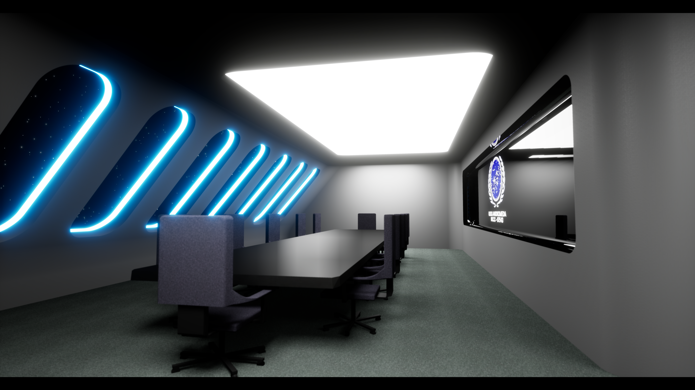
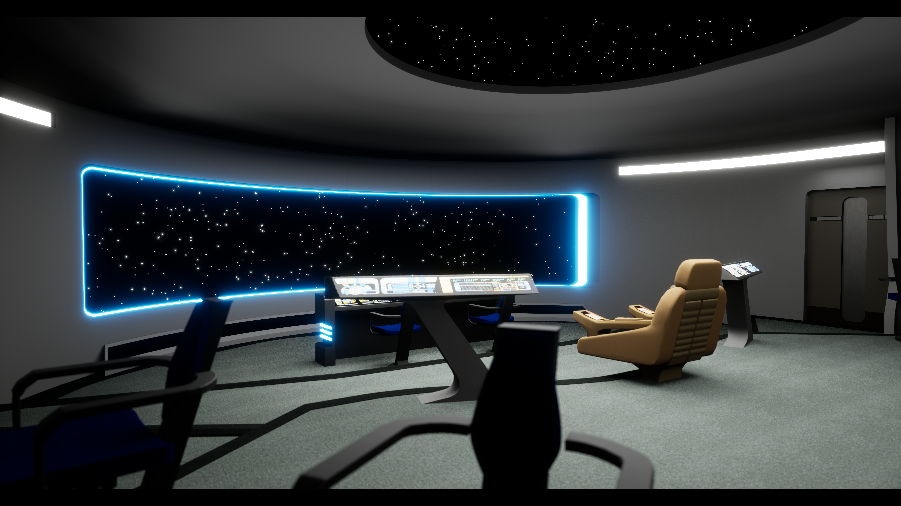
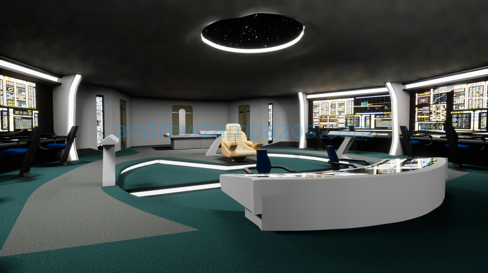
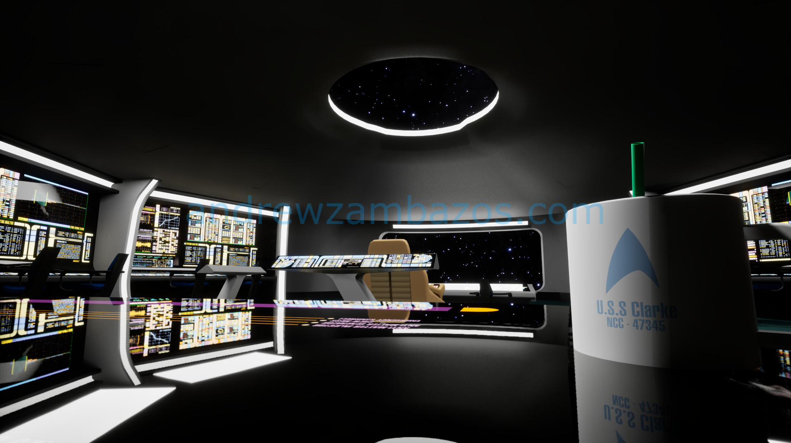
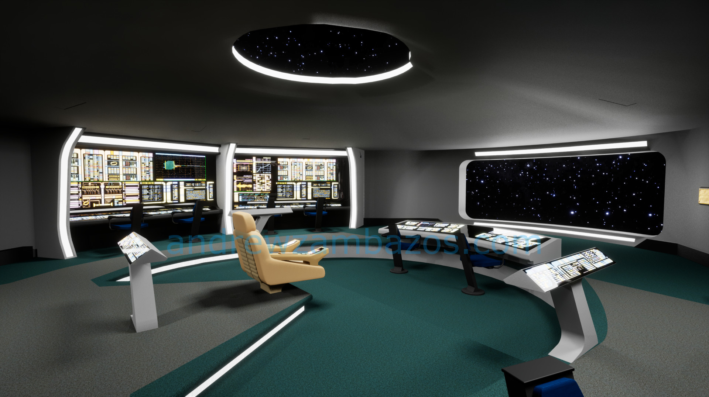
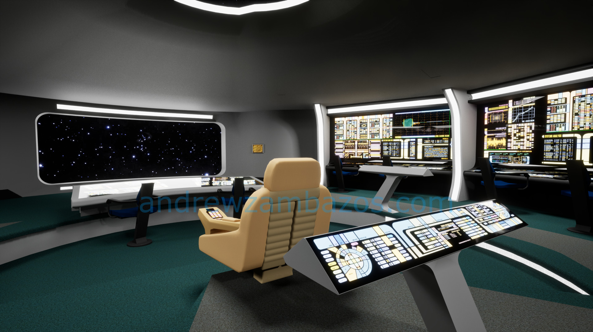
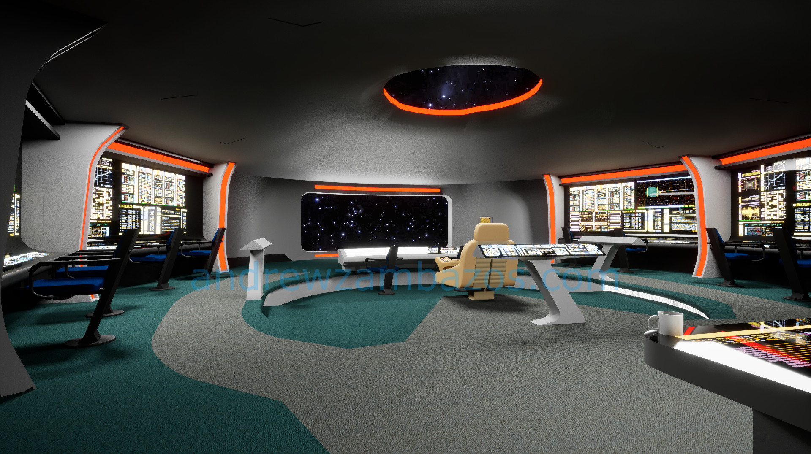

STAR TREK
In Unreal Engine
Introduction
This project involves designing custom Star Trek-inspired environments using Unreal Engine 5. The goal was to blend authentic Starfleet aesthetics with modern game design technology, highlighting detailed modeling, dynamic lighting, and immersive textures.

Problem Statement
How can Star Trek environments be faithfully recreated in a modern game engine while maintaining both authenticity and interactivity?
Design & Development
The project was developed using Unreal Engine 5. Key tools included Nanite for high-fidelity geometry and Lumen for real-time global illumination, creating an immersive Starfleet experience. Blender was used for 3D modeling of ship interiors, focusing on the U.S.S. Andromeda Bridge.

Technologies Used
- Unreal Engine 5: Nanite for complex details and Lumen for realistic lighting.
- Blender: 3D modeling of Starfleet-inspired interiors and props.
- Dynamic Lighting: Real-time reflections to enhance realism.
Project Image Gallery








